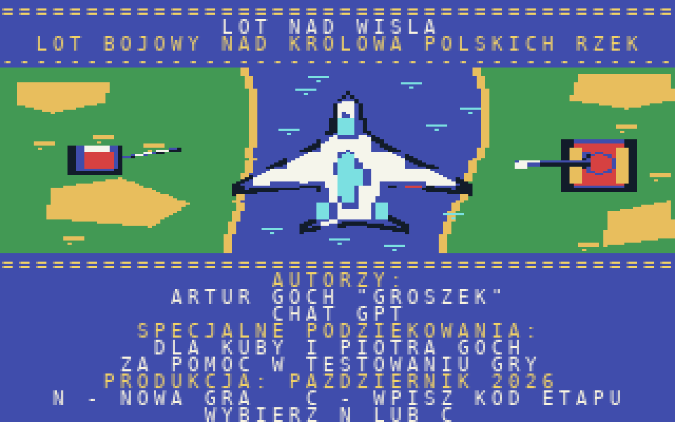

Wsiądź do wojskowego myśliwca i ruszaj w niebezpieczny lot nad Wisłą. Omijaj brzegi, walcz z wrogimi samolotami i jednostkami na lądzie, pilnuj paliwa i dotrzyj do finałowego starcia.

Grafika ekranu tytułowego z projektu gry Commodore 64.
O GRZE
LOT NAD WISŁĄ to polska gra zręcznościowa napisana w asemblerze dla oryginalnego Commodore 64. Płynnie przewijana rzeka tworzy trasę lotu przez sześć etapów. Nad wodą spotkasz wrogie myśliwce, a na brzegach czołgi i działa przeciwlotnicze. Każda kolizja z lądem jest niebezpieczna. Paliwo uzupełniasz, przelatując nad stacjami CPN. Na końcu czeka okręt-boss.
6 ETAPÓWRosnący poziom trudności i finałowy boss.
SIDMuzyka na ekranie tytułowym i efekty strzałów, trafień oraz tankowania.
ŻYCIA I PALIWOTrzy życia na start, pasek wytrzymałości i konieczność tankowania.
PRAWDZIWY C64Gra w asemblerze 6502, plik D64 i przeglądarkowy emulator VICE.
PRAWDZIWE ZRZUTY EKRANU
GALERIA GRY
06 OBRAZÓW
Zdjęcia z rozgrywki LOT NAD WISŁĄ, wykonane w emulatorze. Kliknij miniaturę, aby ją powiększyć; w powiększeniu możesz przechodzić strzałkami między obrazami.
1. Ekran tytułowyEkran tytułowy gry z samolotem, rzeką i informacjami o twórcach.2. Początek etapu 1Plansza „Źródła Wisły” i kod pierwszego etapu.3. Wrogie samolotyLot nad Wisłą, dwóch przeciwników w powietrzu i punkt tankowania.4. Czołg na brzeguWystęp lewego brzegu z czołgiem oraz nadlatujący samolot przeciwnika.5. Działo naziemneDziało na prawym brzegu i walka w późniejszym etapie gry.6. Finałowy bossEtap 6: starcie z okrętem i pasek BOSS HP.
TWÓRCY
Artur Goch „Groszek” i ChatGPT. Specjalne podziękowania dla Kuby i Piotra Gochów za pomoc w testach. Październik 2026.
Uwaga o wersji: strona udostępnia obraz D64 kompilacji I1.4, zachowany w repozytorium gry. Nowsze wersje są rozwijane oddzielnie i nie zostały jeszcze podmienione w bibliotece RETRO PRZYSTANI.